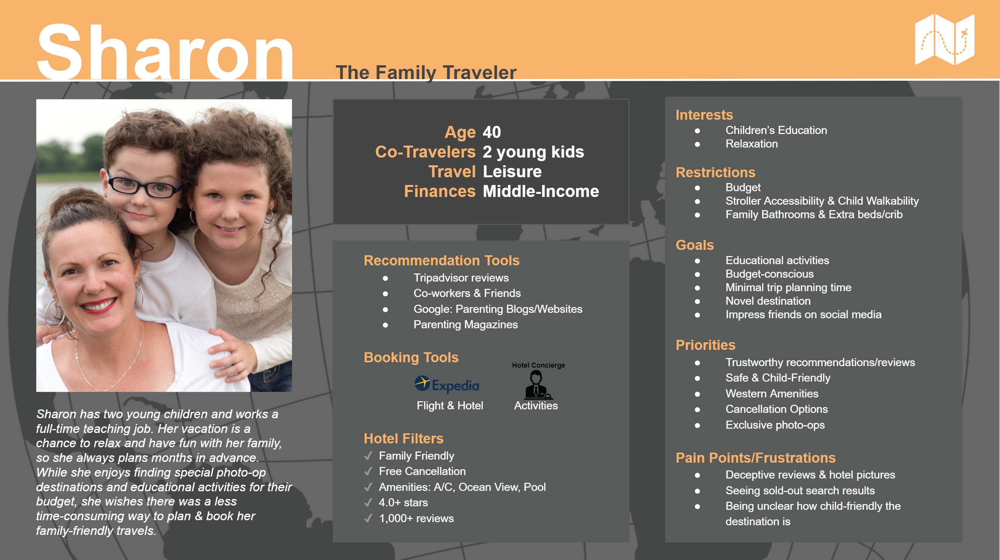
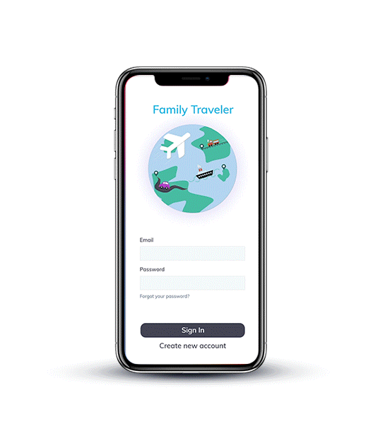
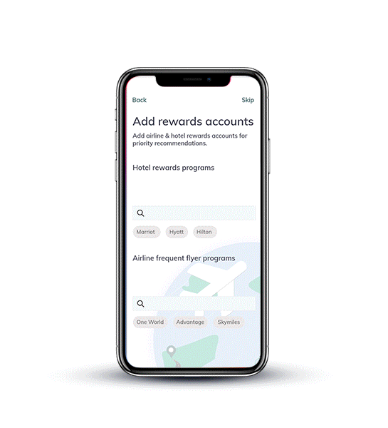
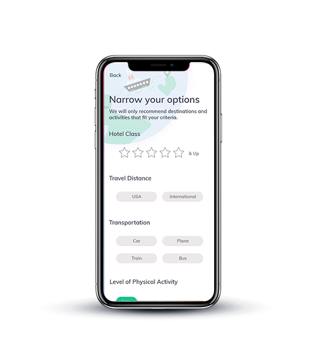

The following product was ideated as a group capstone project with 3 other Master's Candidates at the University of Michigan. The prototype and maps below were created by myself.
Following preliminary research & interviews, I created a persona that reflected our target user's most prominent concerns when it came to planning family trips.
A Value-Effort matrix was used to narrow down product design requirements that satisfied tasks the user would typically complete when travel planning. Each was scored based on its value to the user, and the effort required to implement it as a feature.
HIGH PRIORITY
1. Present accurate descriptions of destinations and lodging.
2. Reduce the time it takes to find an appropriate destination.
3. Inform uses about family-friendly hotels and their amenities.
4. Consider who is traveling in a user’s group.
MEDIUM PRIORITY
5. Consider the proximity of lodging to the area’s attractions.
6. Tailor recommendations to the user’s interests.
7. Track the user’s “bucket list” destinations.
8. Recommend age-appropriate activities at suggested locations.
LOW PRIORITY
9. Suggest a customizable packing list.
Over the course of three brainstorming sessions, solutions with features satisfying the priority design requirements were sketched.
Early brainstorms focused on delegating travel planning tasks through mobile devices.However, this did not solve the pain-point of isolation.
Finally a multi-interface product solution was ideated. In this solution, the app would be used on a mobile interface only by the parent during pre-planning. Then, a Smart TV would prompt families to plan together, congregating and collectively navigating through cutomized travel reccomendations.
Potential interactions were narrowed down based on their popularity amongst interviewees, the design requirements matrixes, and design feasibility. These were then organized into a User Story Map. This was the first exhibit of what a user's journey through the app from mobile to Smart TV interface might entail. Pages and their UI elements such as buttons, input fields, and sliders were specified and ordered here.
Map of voice interactions for the Smart TV app.
The final step prior to prototyping was wireframing. These frames and UI elements actualized the interactions mapped above, and served as the blueprint for our high-fidelity prototypes. A Style guide was also created at this stage to ensure consistency between the Smart TV and Mobile interfaces once the wireframes were translated to a higher fidelity.
The prototype was created by me, using Adobe XD. Grapics and Icons were created from scratch with Microsoft Powerpoint & Adobe illustrator, and from Shuterstock Vector Icons stock.
  